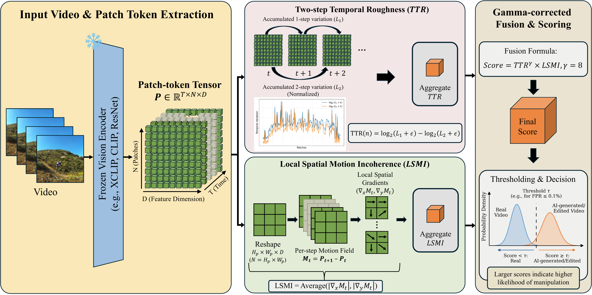
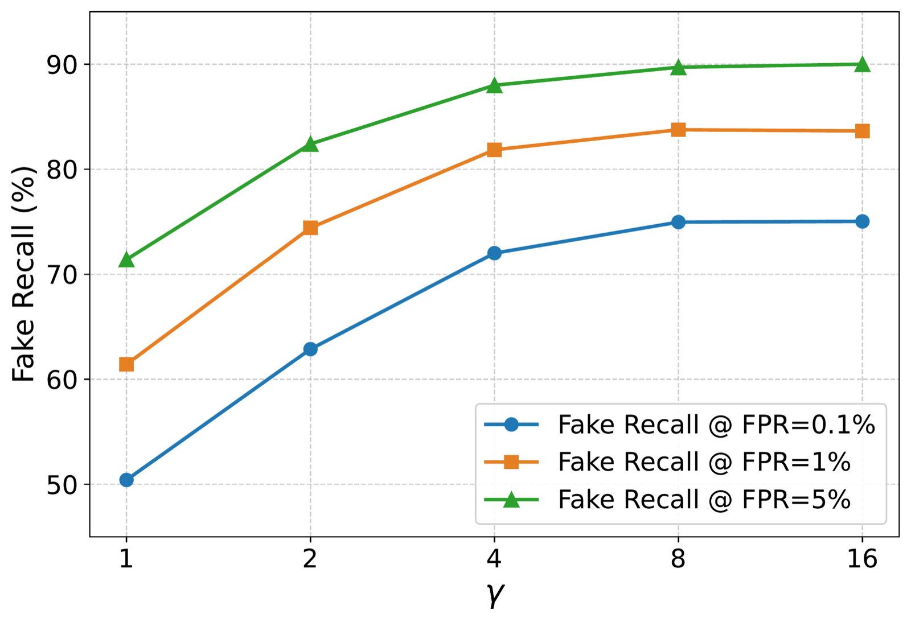
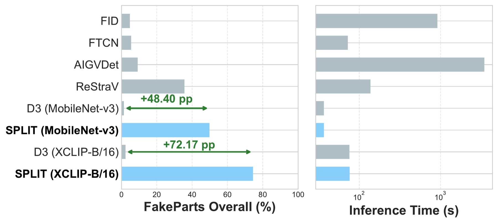

Abstract
Deploying AI-generated video detectors in real-world services demands an ultra-low false positive rate (FPR) on real videos to avoid falsely rejecting authentic content, a regime where standard metrics such as AUROC fail to reflect actual operating behavior. We introduce Spatial Patch-Level Incoherence and Temporal Roughness (SPLIT), a training-free detector that operates on patch tokens from a frozen vision encoder to detect both fully generated and partially edited videos. SPLIT computes two complementary signals: Two-step Temporal Roughness (TTR), capturing non-smooth patch trajectories via one-step and two-step feature variation contrast, and Local Spatial Motion Incoherence (LSMI), measuring spatially inconsistent temporal changes through gradients of a feature-space motion field. The two are fused multiplicatively with gamma correction to sharpen real–fake separation at strict thresholds. We further propose a service-aligned evaluation protocol based on Fake Recall at fixed FPR with real-only threshold calibration and cross-real threshold transfer. Across three benchmarks — FakeParts, GenVideo, and ViF-Bench — SPLIT achieves the highest Fake Recall at FPR = 0.1%, substantially outperforming supervised and training-free baselines while remaining robust to post-processing with negligible overhead.
At a glance
Fake Recall at FPR = 0.1% — the deployment-relevant operating point, where the threshold is set to reject roughly 1 authentic video in 1,000 on the calibration set.
best baseline 35.7%
best baseline 45.5%
best baseline 33.9%
- Training-free. Two closed-form statistics on frozen encoder tokens — zero learned parameters, no generator labels.
- Patch-level. Scoring every patch instead of a pooled clip embedding keeps localized edits from washing out.
- Real-only calibration. Thresholds are set from authentic video alone, and stay near target when the real domain shifts.
- Negligible overhead. Matches D3's runtime on the same backbone; the encoder forward pass dominates.
Method
A frozen vision encoder turns a clip into patch tokens. Two statistics read them — one along time, one across space — and multiply into a single score.

Two-step Temporal Roughness
Each patch traces a trajectory in feature space. accumulates frame-to-frame displacements; is a length-normalized two-step chord. Constant-velocity motion makes them equal and smooth motion keeps them close — flicker and local misalignment push above .
Local Spatial Motion Incoherence
Real motion is spatially coordinated: neighbors change together. LSMI takes spatial gradients of the feature-space motion field . Edited regions move unlike their neighbors, raising it.
Multiplicative fusion with a fixed sharpening exponent — chosen once on a held-out split, never learned. A clip is flagged when , where is calibrated on real videos only to hit a target FPR .
Service-aligned evaluation
AUROC averages over regions of the ROC curve no deployed service operates in. If false rejections must be rare, only the far-left tail matters.
Fake Recall at fixed FPR
Recall on manipulated video at , instead of a curve-wide average.
Real-only calibration
is set on real video alone — no access to the generators a deployed detector has yet to meet.
Cross-real transfer
Calibrate on ROVI and on MSR-VTT separately, then report the harmonic mean of both Fake Recalls.
Results
Fake Recall at FPR = 0.1% under cross-real threshold transfer, against the strongest of the eleven compared detectors. Full tables for all methods and operating points are in the paper.
Overall, at FPR = 0.1%
| Method | Type | FakeParts | GenVideo | ViF-Bench |
|---|---|---|---|---|
| FID | sup. | 4.71 | 34.03 | 5.22 |
| FTCN | sup. | 5.44 | 32.80 | 15.46 |
| AIGVDet | sup. | 9.13 | 45.38 | 25.69 |
| ReStraV | sup. | 35.67 | 45.52 | 33.93 |
| D3 | free | 2.28 | 5.47 | 0.97 |
| SPLIT | free | 74.45 | 85.16 | 84.52 |
sup. = supervised, trained on GenVideo-100K; free = training-free. Best baseline per benchmark underlined. SPLIT roughly doubles the strongest baseline on FakeParts and ViF-Bench while learning nothing.
SPLIT as the threshold relaxes
| Benchmark | 0.1% | 1% | 5% |
|---|---|---|---|
| FakeParts | 74.45 | 83.58 | 89.70 |
| GenVideo | 85.16 | 93.09 | 97.35 |
| ViF-Bench | 84.52 | 95.08 | 98.46 |
Recall climbs steadily rather than only just clearing the cut — the mark of a score distribution that genuinely separates real from generated content.
Which edits are hard
FakeParts by manipulation category, FPR = 0.1%.
| Method | Extrap. | Faceswap | Inpaint. | Interp. | Outpaint. | Style | T2V | TI2V | Overall |
|---|---|---|---|---|---|---|---|---|---|
| AIGVDet | 0.42 | 0.89 | 0.98 | 0.43 | 0.56 | 3.69 | 31.65 | 34.39 | 9.13 |
| ReStraV | 23.27 | 12.98 | 19.09 | 0.18 | 91.45 | 18.60 | 46.65 | 73.13 | 35.67 |
| D3 | 0.00 | 0.04 | 0.00 | 0.00 | 2.72 | 0.34 | 14.46 | 0.66 | 2.28 |
| SPLIT | 97.86 | 60.09 | 2.48 | 67.81 | 96.52 | 98.80 | 76.74 | 95.27 | 74.45 |
Extrapolation, Outpainting, Style Change and TI2V are near-saturated even at this threshold. Inpainting is the one category where SPLIT is beaten — ReStraV leads with 19.09% — reflecting how little of each frame an inpainting edit touches. On GenVideo, SPLIT clears 90% on six of the ten generators; on ViF-Bench it ranks first on all nineteen, spanning 61.58–98.98%.
What drives it
Three levers — patch-level granularity, the spatial signal, and the gamma exponent — plus the two properties a deployment cares about: cost and calibration stability.
Component ablation
| Patch | TTR | LSMI | 0.1% | 1% | 5% |
|---|---|---|---|---|---|
| – | ✓ | – | 54.21 | 76.72 | 88.77 |
| ✓ | ✓ | – | 68.29 | 82.09 | 89.37 |
| ✓ | – | ✓ | 8.04 | 14.63 | 25.07 |
| ✓ | ✓ | ✓ | 74.45 | 83.58 | 89.70 |
Swapping global [CLS] embeddings for patch tokens is the largest single jump,
+14.08 at FPR = 0.1%. LSMI alone is weak, but adds a further +6.16 on top of patch-level
TTR. FakeParts Overall, cross-real threshold transfer.
Gamma exponent

Gains rise steadily from to , then flatten; can regress slightly. is used for every benchmark and every FPR target.
Cost

Recall at FPR = 0.1% against end-to-end time on 1,000 FakeParts T2V samples (log scale). Encoding dominates, so TTR and LSMI add almost nothing — SPLIT matches D3's runtime while taking recall from 2.28% to 74.45%.
Calibration stability
| Method | MSR-VTT → ROVI | ROVI → MSR-VTT |
|---|---|---|
| AIGVDet | 13.22 | 0.00 |
| ReStraV | 0.00 | 15.30 |
| D3 | 0.00 | 1.18 |
| SPLIT | 0.03 | 0.56 |
Actual rejection rate (%) on a held-out real domain when the threshold was calibrated for a 0.1% target on a different one — closer to 0.1 is better. SPLIT stays near target both ways, while ReStraV rejects nothing in one direction and 15.30% of real videos in the other.
Post-processing
| Method | Clean | Blur σ2 | JPEG 80 | Flip y |
|---|---|---|---|---|
| ReStraV | 35.67 | 54.73 | 24.42 | 38.50 |
| D3 | 2.28 | 1.89 | 2.78 | 2.09 |
| SPLIT | 74.45 | 55.42 | 64.40 | 66.92 |
FPR = 0.1%, the harshest setting of each perturbation. Blur costs the most yet still leads; JPEG is gentler, so the signal does not rest on fragile high-frequency artifacts. At FPR = 5% every condition stays within 87.12–89.70%.
Vision encoder
| Encoder | FakeParts | GenVideo | ViF-B. | |||
|---|---|---|---|---|---|---|
| D3 | SPLIT | D3 | SPLIT | D3 | SPLIT | |
| XCLIP-B/16 | 2.28 | 74.45 | 5.47 | 85.16 | 0.97 | 84.52 |
| CLIP-B/16 | 1.66 | 71.47 | 2.37 | 85.87 | 0.74 | 85.29 |
| DINOv2-B | 4.00 | 47.77 | 16.32 | 68.03 | 3.97 | 56.64 |
| ResNet18 | 1.93 | 61.23 | 1.68 | 76.10 | 0.94 | 73.53 |
| MobileNet-v3 | 1.77 | 49.81 | 1.60 | 67.15 | 1.02 | 61.07 |
FPR = 0.1%. SPLIT beats D3 with every backbone tested — five of ten shown — transformer and CNN alike. Finer patch grids help, but even MobileNet-v3 lifts FakeParts recall from 1.77% to 49.81%: the gain comes from patch-level scoring, not a particular representation.
BibTeX
@misc{hyun2026splittrainingfreeaigeneratedpartially,
title={SPLIT: Training-Free AI-Generated and Partially Edited Video Detection via Spatial Patch-Level Incoherence and Temporal Roughness},
author={Jongyeop Hyun and Hyounghun Kim},
year={2026},
eprint={2607.02886},
archivePrefix={arXiv},
primaryClass={cs.CV},
url={https://arxiv.org/abs/2607.02886},
}Supported by IITP grant funded by the Korea government (MSIT) (No. RS-2019-II191906, Artificial Intelligence Graduate School Program, POSTECH).